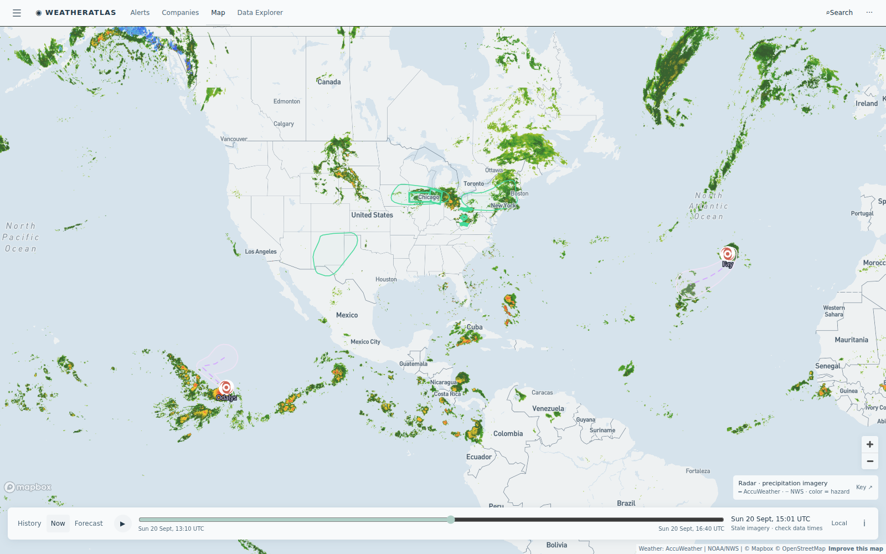

Daily severe-weather intelligence for LNG, refining, offshore, and terminal operators.

Live radar + alerts, 20 Sept 14:30 UTC. Tropical Storm Fay marked in the eastern Atlantic (no land threat; no US Gulf threat this week). Outlined storm corridors carry today's footprint: the Midwest flood regime over northern Illinois and the Tri-State corridor, day-three convection over New Mexico Permian country, and a wet Sunday across the central Appalachians gas belt. Interactive radar + hurricane tracker: accuweather.taborlin.co.
| System | Status | Energy-asset impact |
|---|---|---|
| TS Fay (eastern Atlantic, SW of the Azores) | WATCH | Upgraded from Tropical Depression 6 overnight; no coastal watches/warnings, no land threat — but it is the season's statistical peak, so track checks stay daily |
| Hurricane Odalys (E Pacific) | CAT 1 | 75 mph, moving over open Pacific away from Mexico — west-coast LNG port and Pacific marine logistics watching only |
| Midwest flood regime — Chicagoland / Tri-State, day 3 | ACTIVE | Flood watches persist around Chicago and Dubuque; AccuWeather flash-flood flags live at lakeside refining and Illinois riverfront chemical sites — dock, rail and barge loading exposed again today |
| Permian flash-flood flags (NM) — day 3 | ACTIVE | Third straight day of AccuWeather flash-flood threats on Bone Spring / Avalon operators — pad lightning stand-downs and haul-road washout risk |
| Central Appalachians heavy rain (OH/WV/PA) | ACTIVE | AccuWeather "Dangerous Weather Imminent" flash-flood flags live on Marcellus/Utica producing counties — pad access, tank battery and crew-move exposure through tonight |
| Midcon heat dome | DONE | Autumn cooldown arrived — Kansas–Oklahoma refining belt drops back to the 80s; power-burn lift fades |
Same afternoon hours, same coordinates (Lemont, Illinois — Chicago-area refinery on the canal, 41.67°N 88.08°W), two very different planning answers:
77–85% afternoon thunderstorm window inside the day's flash-flood corridor while free feeds read 27–43% — dock and rail planning against two different skies, day three.
Live brief →AccuWeather "Severe Weather Threat: Flash Flood" live at the complex while the free feed shows a soft 22% Sunday — the forecast-gap headline of the day.
Live brief →Crude unwinds hard as Saudi supply fears ease; the weather premium deflates with quiet tropics — today's weather-trade read.
Market note →Asset-pinned AccuWeather + NWS alert board with lightning feed — the same data powering these briefs.
accuweather.taborlin.co →